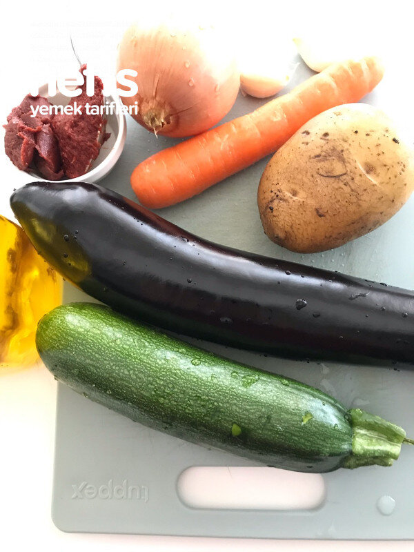

🍽️ 4-6 kişilik⏱️ Hazırlık: 25 dk🔥 Pişirme: 40 dk🏷️ Et Yemekleri🏷️ Kebap Tarifleri
Malzemeler
- 1 tane soğan
- 1-2diş sarımsak
- 1 adet havuç
- 1 adet patates
- 1 adet kabak
- 1 adat patlıcan
- 1 adet domates
- 200 gram kuşbaşı et
- 1 fincana yakın zeytinyağı
- Salça
- Toz biber
- Pul biber
- Karabiber
- 1 bardak su
- Tuz
Hazırlanışı
- Önce sıvı yağda soğan ve sarımsak birlikte sotelenir.
- Kuşbaşı etler ilave edilerek sotelemeye devam edilir.
- Daha sonra sırasıyla havuç, sonra patates, kabak ve patlıcan sırayla ilave edilir.
- En son domates ilave edilir biraz daha kavrulunca salça ve toz biber, baharatlar ve tuz ilave edilir.
- Daha sonra 1 bardak su ilave edilerek kısık ateşte pişirilir. Kontrol edilerek ocak kapatılır.
- Ve servise hazır.